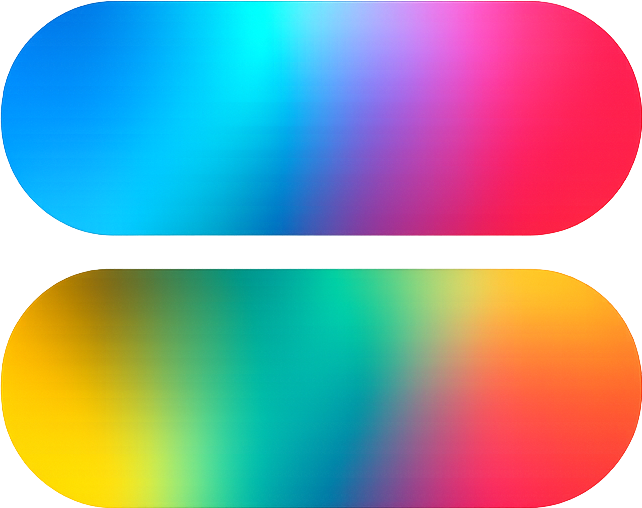

지능
itriX에게 지능이란 다른 사람들이 간과하는 것을 보는 것에서 시작됩니다. 대부분의 사람들은 문제만 봅니다. 지능은 그 문제가 어떻게 표현되었는지를 묻습니다.
가장 위대한 발견은 종종 새로운 답을 찾는 것이 아니라, 기존의 질문에 의문을 제기하는 데서 시작됩니다. 진정한 지성이란 그 렌즈 자체를 볼 수 있는 능력입니다.

대부분의 회사 이름은 대문자로 시작합니다.
itriX는 대문자로 끝납니다.
이는 단순한 스타일상의 선택이 아닙니다. 이 회사가 컴퓨팅의 미래가 어디에 있다고 믿는지 보여주는 선언입니다.
인간은 표상을 통해 세상을 이해합니다. 우리는 현실을 직접 경험하지 않습니다. 우리는 현실을 해석하는 데 도움이 되는 모델, 언어, 지도, 기호, 방정식, 추상화를 경험합니다.
모든 학문은 이러한 표현에 의존합니다. 시간이 지남에 따라 이러한 표현들은 너무나 익숙해져서 시야에서 사라집니다. 우리는 더 이상 그것들을 보지 못합니다. 우리는 그것들을 통해 세상을 봅니다.
렌즈는 보이지 않게 됩니다.
컴퓨팅도 예외는 아닙니다. 현대 컴퓨팅은 놀라운 성과에서 탄생했습니다. 그것은 물리적 세계의 복잡성을 이진 상태의 언어로 변환했습니다.
지속적인 현상은 수치적 표현이 되었습니다. 현실은 정보가 되었습니다. 정보는 계산이 되었습니다. 이러한 변혁은 디지털 시대를 열었습니다.
그러나 모든 표현에는 가정이 내포되어 있습니다. 그리고 모든 가정에는 한계가 따릅니다.
무엇을 쉽게 볼 수 있는가
02무엇을 표현하기 어려운가
03무엇을 피할 수 없는 것으로 받아들이는가
itriX는 다른 질문에서 출발합니다.
문제가 계산이 어떻게 실행되는가뿐만 아니라 계산이 어떻게 표현되는가에 있는 것이라면, 복잡성은 문제 자체가 아니라 문제를 바라보는 관점의 결과일 수도 있습니다.
지속 가능한 AI를 위한 계산 AI 인프라를 구축하는 것입니다.
현대 컴퓨팅을 거부하는 방식이 아닙니다. 디지털 시스템을 대체하는 방식도 아닙니다. 디지털 컴퓨팅이 탄생한 이래로 거의 의문의 여지 없이 받아들여져 온 가정들을 면밀히 검토함으로써 이루어집니다.
itriX는 계산이 실행되기 전에 먼저 표현된다고 믿습니다. 표현되기 전에, 그것은 해석됩니다. 그리고 이러한 단계들 안에는 기존 접근 방식이 종종 간과하는 기회들이 숨어 있습니다.
이 철학을 우리는 재구성이라 부릅니다.
itriX에게 지능이란 다른 사람들이 간과하는 것을 보는 것에서 시작됩니다. 대부분의 사람들은 문제만 봅니다. 지능은 그 문제가 어떻게 표현되었는지를 묻습니다.
가장 위대한 발견은 종종 새로운 답을 찾는 것이 아니라, 기존의 질문에 의문을 제기하는 데서 시작됩니다. 진정한 지성이란 그 렌즈 자체를 볼 수 있는 능력입니다.
진보는 항상 더 많은 힘을 가한다고 해서 이루어지는 것은 아닙니다. 때로는 관점을 바꾸는 것에서 진전이 시작됩니다.
itriX에게 있어 변혁이란 하나의 표현 공간에서 다른 표현 공간으로의 이동을 의미합니다. 그 밑바탕에 있는 현실은 변하지 않을 수도 있습니다. 그러나 눈에 보이는 것은 극적으로 바뀔 수 있습니다.
새로운 계산적 관점은 현실 세계와 접할 때만 의미가 있습니다. itriX는 추상적인 지적 연습으로서 재구성을 추구하지 않습니다.
관련성이란 통찰력이 인프라가 되어야 함을 의미합니다. 수학적 가능성과 산업적 현실 사이에 다리를 놓는 것, 그것이 itriX가 추구하는 관련성입니다.
AI가 점점 더 강력해짐에 따라 신뢰는 점점 더 중요해지고 있습니다. 무결성은 이해되고, 검증되며, 책임감 있게 적용될 수 있는 기술을 구축하는 것을 의미합니다.
모든 모델은 불완전합니다. 모든 프레임워크에는 한계가 있습니다. 모든 렌즈는 어떤 것은 드러내지만 다른 것은 가려버립니다. 진정성은 이 진실을 인정하는 데서 시작됩니다.
마지막 X는 정체성을 정의하는 핵심 요소입니다. 이 글자는 유일한 대문자입니다. 또한 앞선 모든 글자가 가리키는 목적지이기도 합니다.
X는 제품을 나타내지 않습니다. 특정 기술을 상징하지도 않습니다. 보이지 않던 것이 보이는 순간, 렌즈 자체가 시야에 들어오는 순간을 상징합니다.
X의 중심에는 itriX가 재구성 지점이라고 부르는 것이 있습니다. 이는 최적화 지점이 아닙니다. 최적화는 기존 프레임워크 내에서 성능을 향상시킵니다.
재구성은 프레임워크 그 자체에 의문을 제기합니다. 모든 계산은 표현 공간 내에서 수행되고, 그 공간은 정보가 어떻게 조직되는지, 관계가 어떻게 표현되는지, 복잡성이 어떻게 나타나는지를 결정합니다.
표상 공간이 변하면 계산의 구조도 함께 변할 수 있습니다.
이 철학은 두 가지 상호 보완적인 경로를 통해 표현됩니다. 하나는 소프트웨어 계층에서 계산 재구성을 탐구하고, 다른 하나는 재구성을 인프라로 확장합니다.
수십 년 동안 컴퓨팅의 핵심 질문은 다음과 같았습니다.
itriX는 다른 질문을 던집니다.
어떤 한계는 법칙이 아니라는 가능성. 어떤 경계는 현실이 아닌, 표현에 속한다는 가능성. 우리가 그동안 바라보던 렌즈를 마침내 제대로 보게 될 때, 컴퓨팅의 미래가 시작된다는 가능성.
기술 페이지로 돌아가기